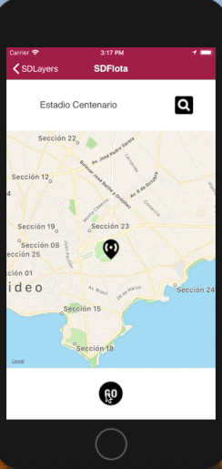

Enables the possibility to draw the route between two points on the map. Values
Scope Objects: Panel for Smart Devices, Work With for Smart Devices Description
When the property is set to True, it is possible to draw the route between two points on the map. These points are given by the values loaded using Location Attribute property or Location Field Specifier property. Two more properties are enabled to configure the Directions layer: Transport Type property and Default Route Class property.  The implementation of this property is server-side and is done by the DirectionsServiceRequest Rest Service RequirementIn order to visualize the direction, it is necessary to have the Google API Key property (at Environment level) configured with a valid API Key. This Key must have configured the restriction of API Direction. Run-time/Design-timeThis property applies only at design-time. How to apply changesTo apply the corresponding changes when the property value is configured, execute a Build with this Only of the object. AvailabilityThis property is available since GeneXus 16 upgrade 6. See Also
|